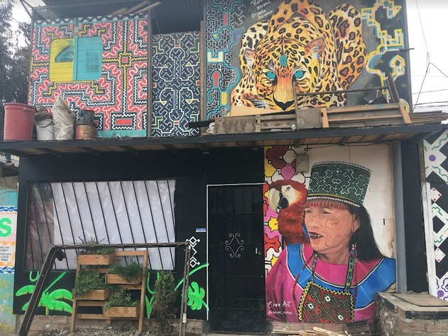
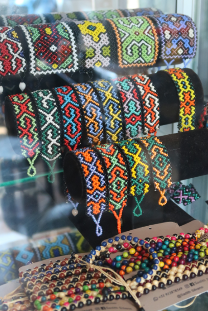
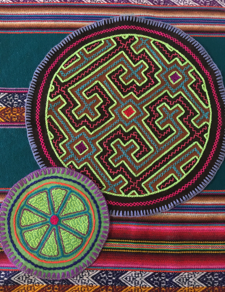
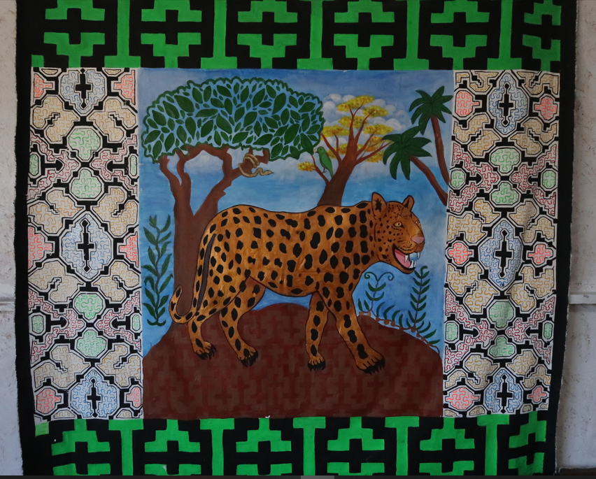
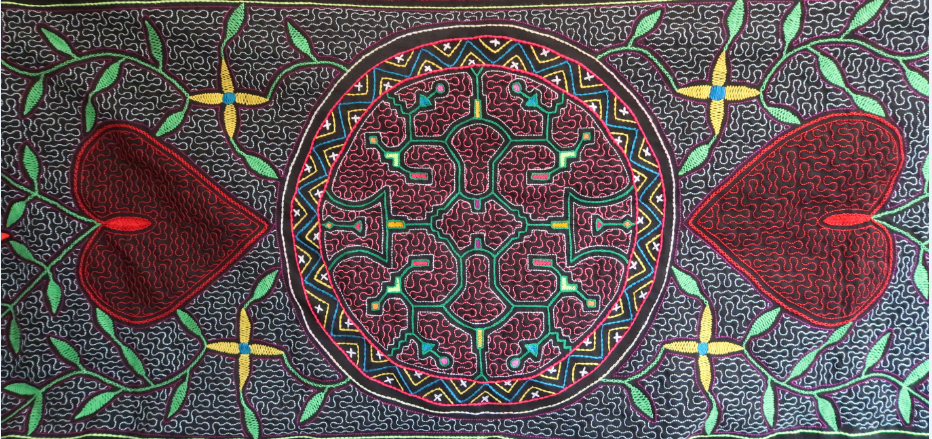
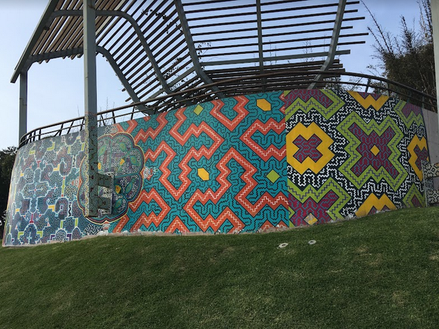
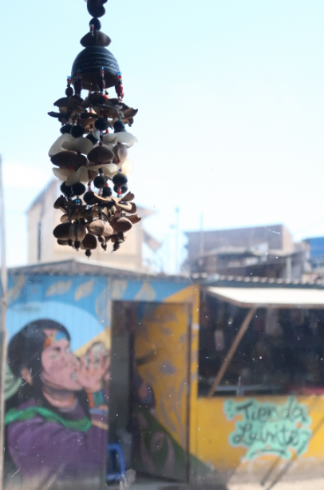

Sztuka jest kobietą o niewyczerpanej sile:
Sadith Silvano i sztuka wizyjna Shipibo-Konibo
Na początku był wąż.
Ogromna anakonda wiła się w ciemności, a wzory na jej skórze migotały jak żywe. Anakonda śpiewała o nich, a dźwięki kapały w czarną przestrzeń dookoła jej potężnego ciała. Każdy dźwięk był jednym wzorem, a gdy wszystkie już zostały wyśpiewane, połączyły się i zmaterializowały tworząc Wszechświat i ludzi. Oto legenda o stworzeniu świata opowiadana przez lud Shipibo-Konibo, rdzennych mieszkańców terenów wzdłuż rzeki Ukajali w amazońskiej dżungli w Peru. Są jedną z najliczniejszych grup etnicznych peruwiańskiej Amazonii, liczącą około 35000 dusz, a obecnie także jedną z najliczniej zamieszkujących duże ośrodki miejskie takie jak Lima, Pucallpa czy Yarinacocha. Ich język należy do rodziny Pano, a czas przybycia pierwszych przodków na brzegi Ukajali datuje się na 1500–2000 lat wstecz.
Tym, co wyróżnia Shipibo-Konibo spośród innych grup etnicznych Amazonii jest niezwykła sztuka oparta na wzorach kené. To właśnie o nich śpiewa pierwotna anakonda stwarzająca świat, to one pokrywają jej ciało. Kené to nie tylko pojedyncze symbole czy ciąg wzorów geometrycznych, które pełnią rolę czysto dekoracyjną. To cały system kodujący kompletną wiedzę o świecie, historii, estetyce, tradycji tego ludu. To system opowiadający o jego połączeniu ze Wszechświatem, własną świadomością, drugim człowiekiem i ziemią, z której pochodzą i po której stąpają. To sposób na uhonorowanie przodków i na zachowanie tożsamości w zderzeniu ze współczesnością. To w końcu sposób na ekonomiczne przetrwanie.
Słowo „kené” lub „kewé” znaczy po prostu „wzór” i odnosi się do całej grupy motywów geometrycznych, którymi Shipibo-Konibo tradycyjnie pokrywają powierzchnie różnego typu: od ludzkiej skóry, przez materiały, ceramikę, przedmioty codziennego użytku, biżuterię, przedmioty używane w rytuałach, aż po ściany budynków i domów. Wzory kené mogą być malowane, wyszywane, tkane — istnieje wiele technik ich wykonywania.
Zafascynowana hipnotyzującym pięknem ukrytym w niekończących się labiryntach kené, udałam się do osiedla Cantagallo w Limie, w którym żyje ponad 200 rodzin Shipibo-Konibo. Odwiedziłam tam artystkę Sadith Silvano, którą poznałam w czasie gdy przebywała z wizytą w Świętej Dolinie w okolicach Cuzco. Lecąc z Cuzco do Limy wciąż miałam to spotkanie w głowie i patrząc przez okno na brązowo-czerwone góry i błyszczące laguny zrozumiałam, że nie mogę opuścić Peru bez próby zrozumienia tego, co tworzy Sadith. Jej prace miały w sobie dziwny magnetyzm, były inne niż wszystko co widziałam na straganach z peruwiańskim rękodziełem. Gdy Sadith śpiewała wodząc palcem po wzorach symbolizujących pierwotną anakondę-matkę, coś drgało człowiekowi w klatce piersiowej, jakby dotykała samego środka serca, uniwersalnego punktu, który ma każdy z nas, nieważne skąd pochodzi.
Po dojechaniu do Cantagallo okazało się, że Sadith na chwilę wyszła i muszę na nią poczekać. Stałam grzecznie między skromnymi domkami i zerkałam nieśmiało na piękne murale pokrywające ich ściany: jaguara, egzotyczne kwiaty, ryby, ptaki. Dookoła był kurz, suche powietrze, zero chodnika, a na ścianach rozkwitała amazońska dżungla i wibrujące kolorami wzory kené. Wtedy zobaczyłam Sadith niosącą kubełki z farbą na kolejny mural. Szła uśmiechając się już z daleka, a w jej uszach migotały piękne kolczyki kené, przypominające kolorowe pióra egzotycznego ptaka. „Hola, amiga.” — powiedziała. Dzień dobry, przyjaciółko.

Jeden z domów w Cantagallo pokryty amazońskimi muralami.
Przyszłam do niej porozmawiać o sztuce, z listą pytań wypisaną na kartce. Jednak gdy usiadłyśmy w jej domku, w pomieszczeniu służącym jednocześnie za pokój dzienny, pracownię i miejsce do prezentacji gotowych już prac, rozmowa poszła w zupełnie innym kierunku niż się spodziewałam. To był mój pierwszy wywiad w życiu. Usiadłyśmy naprzeciw siebie i od razu było wiadomo, że ton tej rozmowie nada Sadith. Będziemy rozmawiać jak dwie kobiety, dwie artystki, dwie wrażliwe istoty ludzkie. Sztuka okazała się kobietą o niewyczerpanej sile, która płynie z jej serca do mojego i na odwrót.
Kené tradycyjnie tworzą tylko kobiety (mężczyźni rzadko, choć zdarzają się wyjątki). Wiedza przekazywana jest z pokolenia na pokolenie, wnuczki i córki podpatrują pracę babć i matek. To sztuka kwitnąca w społeczności, choć kompozycje są indywidualne, a każda artystka tworzy z czasem swój własny styl. Jak mówi Sadith, Shipibo-Konibo nigdzie nie są sami: to społeczność jest ważna, rodzina, przyjaciele, grupa bliskich sobie ludzi. To w niej tkwi siła i kreatywność płynąca z poczucia przynależności, tradycji, miłości. Sztuka Shipibo jest tym wszystkim.
Sadith i jej siostry uczyły się kené od swojej mamy. „Matka ma obowiązek przekazać swoim dzieciom tradycyjną wiedzę, aby nie straciły tożsamości kulturowej, która jest bardzo ważna dla nas. Ta wiedza jest bardzo stara, liczy setki lat. Nie znajdziesz jej ani na uniwersytecie, ani w szkole.” — podkreśla Sadith. Jej nauka zaczęła się już w trzecim roku życia. Najpierw uczyła się jak przekłuwać nasiona wykorzystywane w biżuterii. Później plotła pierwsze bransoletki i zajęła się ceramiką. Sadith wspomina, że jej mama w roli profesora była wymagająca. Siedem dziewczynek doskonaliło swój kunszt pod jej czujnym okiem, a w końcu kunsztu nie zdobywa się w jeden dzień: to lata prób i błędów, zmęczenia i odzyskiwania sił, długich godzin spędzonych na drobiazgowym wyszywaniu, kopiowaniu wzorów, zbieraniu roślin do produkcji barwników, którymi maluje się ceramikę. Sadith śmieje się, że w tamtym czasie raczej przegrywała w rywalizacji z siostrami. Były od niej szybsze i dokładniejsze. Dzisiaj pięć z jej sióstr nadal zajmuje się sztuką, jednak ostatecznie to ona najbardziej związała swoje życie z tradycją kené na różnych poziomach: emocjonalnym, duchowym, materialnym, wizualnym.

Biżuteria z tradycyjnymi motywami. kené.
Shipibo-Konibo to społeczność matriarchalna. Kosmiczna anakonda-matka to energia kobieca. Kobiety są artystkami, niezbędnym elementem, który tworzy rzeczywistość, upiększa ją za pomocą kené, nadaje jej znaczenie energetyczne i uzdrawia w ten sposób. Wzory wykonane na realnych powierzchniach są odbiciem wzorów niematerialnych, do których dostęp zapewniają święte rośliny zwane rao. Energia wzorów postrzeganych w ten sposób w głowie, snach i wyobraźni pochodzi bezpośrednio od rośliny. Shipibo-Konibo nazywają ją koshi: to niewidzialna, ale pozytywna siła. Plastyczna harmonia kené to zmaterializowana energia koshi, która ma za zadanie uzdrowić i upiększyć. Istnieje wiele roślin rao używanych w rytuałach, jednak najważniejszymi dla Shipibo są piripiri i ayahuaska. Ayahuaska, zwana nishi, pozwala na ujrzenie kolorowej energii roślin, a jej forma skręconego pnącza jest identyfikowana z „(…) kosmiczną anakondą ronin, pierwotną istotą, ‚matką’ ayahuaski i wszystkich wód, wodnym źródłem wszystkich wzorów istniejących w przeszłości, teraźniejszości i przyszłości.”* Z kolei piripiri, zwana waste, wyostrza wzrok, sprowadza wizje i według wierzeń Shipibo wyrosła na popiele ze spalonego pnącza ayahuaski. Wszystkie rośliny rao nazywane są po prostu „medicina”, lekarstwem. Nie są substancjami odurzającymi o charakterze rekreacyjnym. Są roślinami wizyjnymi i ich zastosowanie ma charakter ceremonialny. Należy podchodzić do nich z należytym szacunkiem, a stosowanie ich w nieodpowiedni sposób może się łatwo zemścić na użytkowniku. W ten sposób doświadczenie psychodeliczne staje się holistycznym rytuałem dla ciała i ducha.
Sadith podkreśla, że rośliny rao są niezbędne do zrozumienia tego, co kryje się za konceptem kené. „(Najpierw) przygotowuje cię mama.” — mówi. — „Gdy jesteśmy młodzi, nic nie wiemy. Z czasem rozwijasz się i zaczynasz być specjalistą. To przychodzi poprzez święte rośliny, które uzdrawiają wzrok, takie jak piripiri, używana szczególnie na oczy, aby zobaczyć wzory. Widzisz co chcesz zrobić i odzwierciedlasz to. Pracujesz z wizjami. Tak uczyłam się ja, z nicości.”
O doświadczeniu ayahuaski Sadith opowiada mi przy okazji wyjaśniania na czym polega tradycyjny śpiew związany z kené: „Są trzy rodzaje śpiewu: icaro**, mashá*** i pieśni żartobliwe. Pieśni icaro są wykonywane kiedy przyjmujesz ayahuaskę. Łączysz się duchowo, wchodzisz w świat świętych roślin, zaczynasz jakby płynąć. Poddajesz się temu. (Substancja) rozchodzi się w twoich żyłach, płynie do wnętrza duszy, łączysz się i zaczynasz śpiewać. Kiedy śpiewasz używając świętych roślin, otwierasz się. Płaczesz w środku, w duszy. Kiedy przyjmuję ayahuaskę, czuję się połączona ze wszystkim dookoła, widzę kolory i zaczynam śpiewać. To wolna interpretacja, mój własny śpiew, własna ekspresja artystyczna.”

Prace Sadith Silvano. Mniejszy haft symbolizuje ayahuaskę.
Wzory kené nazywane są „cantos pintados”, namalowanymi pieśniami. Każdy tradycyjny motyw ma swoją pieśń. Wzory geometryczne ronin**** kené, posiadające punkt końcowy, są inaczej interpretowane niż wzory mayá***** kené, które są nieskończone. Ostateczna forma zależy od artystki i jej indywidualnej interpretacji. Śpiew mashá jest podobny do icaro, z wyjątkiem rytualnego zastosowania ayahuaski. Pieśni żartobliwe z kolei powstają np. w czasie spotkań towarzyskich, to część celebrowania wspólnego czasu, spontaniczny performance i forma uhonorowania gości.
Sadith bierze do ręki materiał pokryty haftem i zaczyna śpiewać. Jej palec przesuwa się po liniach tworzących wzór jak po partyturze, dźwięk jej głosu wypełnia pokój i przestrzeń między nami. To jest magiczna chwila, nawet jeśli nie rozumiem słów. Śpiew kené jest niezwykły, zaskakująco wzruszający. Na chwilę przenosi w inny wymiar i kiedy Sadith kończy prezentację mam ochotę poprosić ją by nie przestawała, by śpiewała dalej i dalej. Mogłabym jej słuchać z zamkniętymi oczami przez długi czas. Kąpiel w tych obcych, a jednak bliskich sercu dźwiękach jest niezwykle emocjonująca, przynosi nagle radość i lekkość w sercu. Wielu turystów kupujących rękodzieło Shipibo nie zdaje sobie sprawy z terapeutycznej roli śpiewu kené. Jestem bardzo szczęśliwa, że mogę go usłyszeć i poczuć jego działanie na żywo.
Kené łączy w sobie wszystkie zmysły. Kolorowe obrazy pobudzają nasz wzrok, a śpiew słuch. Dotykamy haftów i ceramiki, przesuwamy palcami po wypukłych wzorach, czujemy zapach użytych pigmentów roślinnych. Każdy element niesie w sobie wiedzę o rzeczywistości materialnej i niematerialnej. Odnajduję wśród nich zwierzęta charakterystyczne dla peruwiańskiej Amazonii, takie jak tukany symbolizujące miłość i wierność, zupełnie jak białe gołąbki w Polsce; kolibry przynoszące szczęście i pokój; trójkątne zęby piranii, przyczajone jaguary i majestatyczną anakondę, które dają moc i ochronę. Patrzę na białe kielichy floripondio i różowe hibiskusy, moje ulubione. Na nasiona ayahuaski, haftowane w formie małych kwiatów. Wzory geometryczne układają się na powierzchniach w serpentyny, zupełnie jak rzeki przecinające selwę. Kolejne motywy łączą się, płyną i zakręcają przed moimi oczami. Często widzę znak krzyża, symbol przodków. Te małe i większe dzieła sztuki są nie tylko dekoracjami wykorzystującymi elementy amazońskiego świata. Są nośnikami wiedzy i emocji wielu pokoleń przed nami. Chociaż przyjechałam tutaj z innego kontynentu, z zupełnie odmiennym bagażem kulturowym i historycznym, bezpośrednie piękno i mądrość kené wypełnia moje serce radością i wdzięcznością.

Obraz Sadith Silvano. Jaguar to jedno z najważniejszych zwierząt mocy.
Głównym źródłem inspiracji dla artystów Shipibo-Konibo jest natura i miłość oraz szacunek, które są podstawą relacji człowieka z tym, co go otacza. W tej relacji cały świat staje się domem, którego nie trzeba już podbijać i zdobywać siłą. O dom i jego mieszkańców dba się z czułością i zrozumieniem. „Wszystko pochodzi od Matki Ziemi. Natura daje nam wszystko co mamy. Bez niej jesteśmy praktycznie niczym.” — mówi Sadith, jej oczy błyszczą. — „Najważniejsza jest Amazonia, ona nas żywi. Czyste powietrze. Zwierzęta — należy o nie dbać, są takimi samymi istotami jak my. A my, ludzie, je maltretujemy… Zwierzęta nas chronią: węże, kolibry. Święte rośliny, nie tylko ayahuaska, także pana, chacruna, piripiri… Mamy ogromną ilość uzdrawiających roślin. To wszystko daje nam siłę, sprawia, że czujemy. To inspiracja dla szczęścia, harmonii, połączenia z rodziną.”
Kobiety tworzące kené nie używają wcześniej przygotowanych szkiców ani narzędzi pomocnych w równym ułożeniu wzorów na powierzchni. Wszystkie kompozycje pochodzą bezpośrednio z wizji, z głowy artystki. Elementy graficzne łączą się po kolei tworząc labirynt. Prawdziwym mistrzostwem jest równomierne rozplanowanie i połączenie kolejnych wzorów, delikatność i precyzja linii. Tradycyjnie powierzchnie prac były biało-czarne lub rudo-brązowe, farbowane mahoniem. Wraz z dostępnością materiałów zmieniły się techniki i dzisiaj możemy podziwiać wielokolorowe, psychodeliczne wzory, które tak przyciągają turystów z całego świata. Pojedyncze wzory składające się na pełen obraz nadal są silnie zakorzenione w tradycji, jednak kené to sztuka żywa i nieustannie się zmieniająca. Jedne wzory wychodzą z mody, inne stają się popularne. Projektantki tworzące nowe kompozycje są otwarte na inspiracje wzorami z innych tradycji. „Artystka powinna być dynamiczna aby nie znudzić odbiorcy.” — mówi Sadith. Jej kreatywność jest odbiciem tych słów. Nie tylko wyszywa czy tworzy biżuterię. Jest wokalistką, tancerką, muralistką Soi Noma******, aktywistką, tłumaczką, projektantką mody etnicznej, malarką. W tym roku poleciała do Paryża na otwarcie wystawy „Portrety multiwersum” (Retratos del Multiverso), stworzonej wspólnie z fotografką Aną Elisą Sotelo. Ma za sobą wiele innych wystaw zbiorowych i indywidualnych. Ukończyła kurs ekspercki z zakresu wiedzy o rdzennych ludnościach dzięki stypendium przyznanym przez Uniwersytet Karola III w Madrycie. Jest jedną z liderek w społeczności Cantagallo. Jest w końcu też mamą dwójki nastolatków. Jaką drogę musiała przejść by połączyć te wszystkie role?
Sztuka tworzona przez kobiety nadaje im siłę, nie tylko w sensie symbolicznym. Nie można oddzielić artysty od jego doświadczeń życiowych i otoczenia. Sztuka jest często głównym źródłem utrzymania dla rodzin Shipibo-Konibo. W Iquitos, a później w Limie, mama Sadith sprzedawała własne prace, a także te wykonane przez córki. Nie było to łatwe. W przeszłości Shipibo-Konibo byli mocno dyskryminowani w przestrzeni publicznej. „Widziałam wysiłek mojej matki. Nie kupowano jej sztuki. Czasem widziałam jak płakała, bo ludzie śmiali się z niej, że jest ubrana jak Shipiba. Wtedy było inaczej. Ludzie nie znali jej kultury.” — mówi ze smutkiem Sadith.

Jeden z haftów Sadith Silvano.
W wieku trzynastu lat Sadith postanowiła, że zostanie profesjonalną artystką. Pierwszym etapem był taniec. „Od najmłodszych lat wiedziałam, że chcę być artystką, podobało mi się występowanie. Lubiłam tradycyjny taniec. Zaczęto mnie zatrudniać do tańczenia. Tak zaczął się mój sukces.” — opowiada. Od długiego tańca robiły się pęcherze, drobne kamyki wbijały się w podeszwy stóp, co powodowało gorączkę, ale Sadith była szczęśliwa. Z początku dostawała tylko coś do zjedzenia lub picia po występie, ale z czasem zaczęła zarabiać pierwsze pieniądze. Mogła w ten sposób wesprzeć domowy budżet i pomóc mamie. Sprzedawała własną biżuterię, zaczęły otwierać się kolejne drzwi. W 2008 roku kené zostało wpisane na listę dziedzictwa kulturowego przez Narodowy Instytut Kultury. W 2011 roku artystki z Cantagallo postanowiły zarejestrować swoją działalność i starać się o tytuł rzemieślników, co też uzyskały. Był to ogromny sukces dla ludzi, którzy przez całe pokolenia pracowali jak duchy. Jako aktywistka społeczna Sadith rozumie jak ważna jest zmiana myślenia. Od lat stara się wpływać na sposób w jaki postrzegają siebie kobiety z jej społeczności. Walczy z brakiem wiary, poczuciem niskiej wartości, przemocą ekonomiczną, której doświadczają. Potrzebę niezależności zaszczepiła w niej mama. „Powiedziała mi: córko, nigdy nie oczekuj utrzymania od męża lub partnera.” — wspomina Sadith. — „Ponieważ pewnego dnia twój partner wypomni ci pieniądze, które przynosi do domu. Te pieniądze nie są twoim wysiłkiem. Jak powiedziała, tak się stało. Jestem samotną matką, mam dwoje dzieci. Życie mnie nie oszczędzało, otrzymałam wiele ciosów, muszę to powiedzieć ponieważ to jest częścią mnie. Lecz dzięki mojej mamie nigdy nie oczekiwałam utrzymania ze strony męża. Nie wszystkie żyjemy z własnej pracy, wiele kobiet jest utrzymywanych przez partnera. Cierpią z powodu różnych form dyskryminacji. Psychicznie, emocjonalnie jesteśmy chorzy. Sztuka daje ci możliwość odzyskania własnej mocy, tak jak stało się to w moim przypadku. Moim jedynym mężem jest moja praca, moja sztuka, moja kreatywność. Sztuka jest częścią terapii. Nasi przodkowie potrafili wiele wytrzymać, ale my przybyliśmy tutaj by być szczęśliwymi, a nie maltretowanymi. Musimy pokazać, że to jest możliwe. Jaka jest najlepsza alternatywa? Najlepsze remedium? Co sprawia, że zachowujesz zdrowie psychiczne? Sztuka. Aby malować czy wyszywać musisz się skoncentrować, zainspirować, śpiewać — wtedy łączysz się z energią. Sztuka jest najlepszym lekarstwem, za które mogę podziękować swoim przodkom. W najczarniejszych dniach, które wydarzyły się w moim życiu… sztuka cię cały czas ulecza.”
Nie jest łatwo wygospodarować czas na artystyczny rozwój w tak napiętym grafiku jaki ma Sadith. Dobra organizacja jest najważniejsza aby sprawy domowe i zawodowe nie kolidowały ze sobą. Wstaje więc o czwartej lub piątej rano by przygotować jedzenie i wyprawić dzieci do szkoły. Następnie zajmuje się domem, sprząta, porządkuje rzeczy w pracowni, w wolnej chwili pracuje. Po południu znów przyciągają ją sprawy domowe, dzieci wracają ze szkoły, trzeba zrobić pranie. W międzyczasie przyjmuje gości, klientów, odpowiada na wiadomości w mediach społecznościowych, przygotowuje materiały do publikacji, udziela wywiadów. Wie, że jej wysiłek jest tego wart, bo sztuka to nie tylko możliwość zarobku, to przede wszystkim drzwi do całkiem nowego świata, o którym nigdy nie śniła, że będzie dla niej dostępny. „Sztuka jest szansą.” — mówi. — „Nigdy sobie nie wyobrażałam, że poznam tak wiele wybitnych osób… To było dla mnie: wow! Nigdy nie myślałam, że stanę przed Kongresem, będę w Palacio de Gobierno*******, poznam ministrów, kongresmenów… Spotkania z tymi wszystkimi ludźmi, artystami, mędrcami… Wow, jak sztuka zmienia twoje życie! Sprawia, że widzisz inaczej. Prowadzi cię daleko, daleko.” Dzięki sztuce kobiety zaczynają się organizować, odzyskiwać własną tożsamość w bliskim i dalszym środowisku. To kobiety są tymi, które tworzą nowe drogi za pomocą tradycji, odrzucając jednocześnie powszechne machismo i jego konsekwencje. „Rolą kobiety jest bycie liderką dla innych kobiet, aby mogły mieć takie same możliwości. Takie jakie otrzymałam ja.” — mówi Sadith. Kobieta Shipibo-Konibo nigdy nie jest sama. Zawsze obok niej czuwają inne kobiety, gotowe podzielić się swoją siłą, kreatywnością i czułością.

Mural wykonany przez kolektyw Soi Noma w Parque Bicentenario w Limie.
W ciągu ostatnich lat Sadith zmagała się nie tylko ze sprawami osobistymi, musiała zacząć bronić się także zawodowo. Oficjalna marka Sadith Silvano jest ukoronowaniem walki z systemem, który przez lata ignorował istnienie artystów tradycyjnych, z nieszczerymi pośrednikami, którzy wykorzystują ich finansowo, a także z plagiatem. „Ludzie i rząd wyzyskują rdzenną ludność. Wykorzystują i kopiują pracę tych ludzi. Kopiowanie nie ma żadnej wartości.” — zaznacza Sadith. — „To co robisz, robisz z miłością, z własną inspiracją… Zapytaj kogoś: Jakie znaczenie ma to co stworzyłeś? Dlaczego to robisz? Jeśli to skopiowałeś, pozbawiłeś swoją pracę wartości. Za prawdziwą artystką kryje się historia.” I dodaje gorzko: „Rząd ma obowiązek czuwać nad rdzenną ludnością. Mieszkańcy Amazonii mają lasy, one są naszym złotem. Mają święte rośliny, lekarstwo. Ale (politycy) sprawiają, że czujemy się biedni, myślimy, że nie posiadamy niczego, bo nie mamy pieniędzy i systemu ekonomicznego. Neoliberałowie żyją z nas, wzbogacają się na nas. Ludzie mówią sobie: Jestem biedny, jesteśmy biedni, taki nasz los. Też tak wcześniej myślałam. Teraz już nie. Państwo karmi tym twoją głowę, w ten sposób jesteś gorszy od nich. W ten sposób państwo nas zamyka życiowo, odbiera nam szansę. A jego obowiązkiem jest wspieranie. Gdyby państwo nas wspierało, myślisz, że rdzenna ludność żyłaby tak jak żyje aktualnie? Nie sądzę. Mieszkańcy Cantagallo nie mają prawa własności do ziemi, na której mieszkają. Rząd chce by wielkie korporacje, nie my, Shipibo, robiły swoje interesy tutaj. Dla nich jesteśmy przeszkodą, ale ta przeszkoda sprawia, że Peru jest wielkie. W naszych oczach jesteśmy bogatsi niż oni, tysiąckrotnie. Gdy organizujemy wydarzenia, gdy coś się dzieje, przyjeżdżają i robią zdjęcia by pokazać, że nam pomagają. Upolityczniają nas, robią nam zdjęcia, publikują je i wydaje się, że nas wspierają. Ale tak naprawdę nas wykorzystują. Do czego jest zdolne państwo?”
Rodzina Sadith, tak jak setki innych, przeniosła się z selwy do Limy w poszukiwaniu lepszego życia. Społeczność Cantagallo to jedyne miejsce w stolicy, w którym Shipibo-Konibo mogą się schronić i żyć pielęgnując swoje tradycje. Jest to także miejsce, które może się stać śmiertelną pułapką. W roku 2016 Cantagallo doszczętnie spłonęło, co wywołało ogromny kryzys bezdomności. Ludzie wrócili w roku 2019, państwo obiecało im pomoc w poprawie warunków życia, jednak na obietnicach się skończyło. Pandemia była następnym ciosem, wyjątkowo tragicznym dla społeczności, która opiera się na tradycjach przekazywanych przez starsze osoby. Wirus, kiepskie warunki sanitarne oraz przymusowe zamknięcie zebrały swoje żniwo. Ludzie nie mogli opuszczać osiedla, nie mieli dostępu do szpitala. Skończyła się możliwość pracy i handlu, a przecież z tego większość z nich żyje. „Pandemia w nas bardzo uderzyła. Ten czas był trudny. Nie mamy sklepów stacjonarnych, sprzedajemy na ulicy. Ludzie nie mogli tego robić, nie mieli nawet na jedzenie. Najmocniej dotknęło to wszystko osoby starsze.” — mówi Sadith. Jednocześnie przyznaje, że zawodowo pandemia była dużym punktem zwrotnym w jej życiu. To wtedy stworzyła pierwsze maseczki ochronne pokryte tradycyjnym haftem. „Musiałam siebie stworzć na nowo.” — wspomina. — „Zrobiłam tylko dwa modele maseczek i przyszło wiele osób aby je kupić. Dużo ludzi zaczęło się do mnie odzywać na platformach społecznościowych. Ludzie zobaczyli maseczki i zaczęli kupować, odwiedzać mnie. Przyjechała prasa krajowa i zagraniczna, później telewizja. Zrobiłam te maseczki bez myślenia, że mogą się okazać takim sukcesem. Dobra i zła strona pandemii…” Sadith milknie. Przez chwilę jej oczy są pełne smutku, ale zaraz dodaje silnym głosem: „Jestem bardzo dumna ze swojej działalności, z marki Sadith Silvano. I z mojego kolektywu kobiet, z grupy muralistek. Otwiera się przed nami coraz więcej drzwi. Cały czas planujemy, szukamy nowych strategii, sprzymierzone jako kobiety. Tworzymy sieci znajomości. Łącząc siły ludzi z wybrzeża, z gór i z selwy możemy domagać się sprawiedliwości. Bez współpracy nie ma sprawiedliwości.”
Sztuka i artystyczna ekspresja są tym, co tworzy nas jako ludzi. To umiejętności, które definitywnie wyróżniają nas na tle innych istot zamieszkujących naszą planetę. Są formami opisywania percepcji świata i własnej świadomości. Pytam Sadith co aktualnie przekazuje sztuka wizyjna, którą tworzą Shipibo-Konibo. Jakie są najważniejsze elementy, które poruszają w odniesieniu do rzeczywistości, w której żyjemy? Pierwsze co wymienia to nasz stosunek do natury, zwłaszcza do lasów Amazonii, które powinniśmy chronić. Amazonia jest nieustannym źródłem inspiracji, nauki; jest też źródłem życia, pożywienia. Połączenie człowieka z naturą, równe traktowanie wszelkich istot, poszanowanie świata dookoła nas — oto elementy kluczowe dla artystów tradycyjnych. Równie ważna jest czułość i miłość, które powinniśmy okazywać sobie nawzajem w relacjach międzyludzkich. Mówi także o prawie do życia według zasad i potrzeb danej społeczności, bez utraty tożsamości kulturowej. O prawie do życia na wybranym kawałku ziemi, który jest ważny dla ludzi. Wszystkie te tematy przewijają się zarówno w jej działalności aktywistki i liderki, jak i w sztuce. Jej obrazy autorskie z okresu pandemii nie przedstawiają kolibrów i hibiskusów. Choć utrzymane w żywych kolorach i estetyce Shipibo, są bardziej mroczne. Patrzę na jeden z nich przedstawiający protestujące kobiety w maseczkach, z uniesionymi ramionami. Ta z lewej ma za sobą bloki mieszkalne i mgłę, która wiecznie pokrywa Limę. Ta z prawej ma na głowie charakterystyczny kapelusik noszony w regionach górskich, a w tle rzekę, szczyty Andów i lodowiec. I ostatnia, stojąca pośrodku kobieta Shipibo, w ceremonialnej koronie na głowie, ozdobiona kené. Nie muszę pytać Sadith o interpretację tego obrazu, patrzę w milczeniu na trzy różne kobiety-siostry z zasłoniętymi ustami i myślę o tym, że pewne bitwy wydają się nie mieć końca.
Sadith Silvano i autorka tekstu.
Spotkanie z Sadith to jedno z najważniejszych wydarzeń w mojej dziewięciomiesięcznej podróży przez Peru, Argentynę i Chile. Zaczynam ją w Limie i kończę w Limie, choć nie planowałam wracać do tego wielkiego, szarego miasta. Jest dwudziesty siódmy grudnia, prawie koniec roku. Z Sadith widziałam się ostatni raz we wrześniu. Od tamtego momentu przejechałam tysiące kilometrów, od Atacamy po argentyńską Patagonię, codziennie rano nakładając na nadgarstek jedną z jej bransoletek z ochronnym motywem anakondy. Za każdym razem gdy to robię czuję się piękniejsza i silniejsza. Sztuka jest żywą energią zamkniętą w rzędach kolorowych koralików, w kolejnych warstwach haftu, w pociągnięciach pędzla na kanwie. Sztuka jest kobietą, która tę energię zamienia w miłość. A miłość jest tym, co uruchamia cały świat codziennie od początku.
+++
W styczniu, tuż po Nowym Roku, odwiedzam Sadith raz jeszcze. Udaje nam się zobaczyć zanim ja wrócę do Polski, a ona pojedzie otwierać kolejną wystawę zbiorową, tym razem w Trujillo. Piekę na spotkanie bułeczki z cynamonem i jadę do Cantagallo taksówką. Jest duszno i parno, przyszło peruwiańskie lato. Drzwi i okna w domu Sadith są otwarte na oścież, bo w środku w ciągu dnia temperatura rośnie nieubłaganie ze względu na blaszany dach. Widzę, że Sadith przearanżowała swój salon-pracownię: ustawiła inaczej meble i wygospodarowała więcej miejsca na kącik kuchenny. Pyta jak mi się podoba, uśmiecha się szeroko i znika za regałem, za którym stoi kuchenka. Gotuje obiad i zaprasza mnie do zjedzenia. Ostatnim razem też załapałam się u niej na posiłek. Śmieję się i pytam czy tak jest zawsze gdy ma gości. Mówi, że tak; zawsze dzieli się tym co ma w domu, nieważne czy to pełny posiłek, kilka bananów czy po prostu szklanka wody. Tradycyjnie gościa należy nakarmić. Zupełnie jak w Polsce!

Widok z okna pracowni Sadith na dzielnicę Cantagallo.
Jemy razem spokojnie i w milczeniu, a później rozmawiamy o tym, co zdarzyło się w naszym życiu od ostatniego spotkania. Proszę ją by pokazała mi nowe prace, które przygotowuje na wystawę w Trujillo. Przynosi dwa obrazy, jeszcze nieskończone. Na jednym z nich widzę macicę, której chronią dwie anakondy. Przypomina mi to obrazy Fridy Kahlo, która malowała tego typu elementy by przepracować swoje cierpienie. Jednak z obrazu Sadith bije coś innego: jej macica pokryta błyszczącymi drobinkami brokatu jest celebracją siły i kobiecej świadomości, a węże dookoła niej są barierą ochronną.
Sadith cieszy się, bo w tym roku jej stowarzyszenie muralistek Soi Noma zostanie oficjalnie zarejestrowane. Może otworzy to drzwi do kolejnych podróży i projektów? Może uda się zaprosić Soi Noma do Polski? Nie wiemy co przyniesie przyszłość. Dziś cieszymy się swoją obecnością i wspólną filiżanką kawy zanim rozdzieli nas ocean. Co chwilę łasi się do nas kotek sąsiadów, który mimo prób usunięcia z salonu postanowił, że właśnie na naszych kolanach spędzi to popołudnie.
Na pożegnanie ściskam Sadith bardzo mocno i robimy pamiątkowe zdjęcie. Wychodzę od niej znów wypełniona czułością do drugiego człowieka. Czy zobaczymy się jeszcze kiedyś na żywo? Nie wiem. Niektóre ścieżki w życiu są takie dziwne. Kto by pomyślał, że jedna z nich zaprowadzi mnie do salonu Sadith, a ja później przywiozę do Polski tę opowieść o tożsamości i sile kobiet, o personalnym i kolektywnym doświadczaniu rzeczywistości i sztuki. Nasze drogi skrzyżowały się by to, co gra w amazońskim sercu Sadith, mogło zostać usłyszane na drugim końcu świata.
Dziękuję, Sadith, za tę piękną wymianę energii.
Gracias, amiga.
+++
Jeśli chcesz śledzić pracę Sadith, sprawdź jej konto na Instagramie (@sadith_silvanooficial) lub FB.
*** Słowo „mashá” odnosi się do tradycyjnego rytmu i śpiewu. Śpiew charakteryzuje się użyciem wysokich tonów i powtarzalnych fraz.
**** Słowo „ronin” odnosi się do pierwotnej anakondy, matki wszystkich istot.
***** Słowo „mayá” odnosi się do okrągłych wzorów, które dają złudzenie obracania się.
****** Soi Noma dosłownie znaczy „piękna kobieta”. To jedna z grup kobiet-muralistek zamieszkujących Cantagallo i tworzących tradycyjne murale nie tylko w Peru, ale i w innych krajach Ameryki Południowej, a także w Stanach i Kanadzie. Więcej informacji o Soi Noma można znaleźć na FB (Mujeres Muralistas Soi Noma) lub Instagramie @mujeresmuralistassoinoma